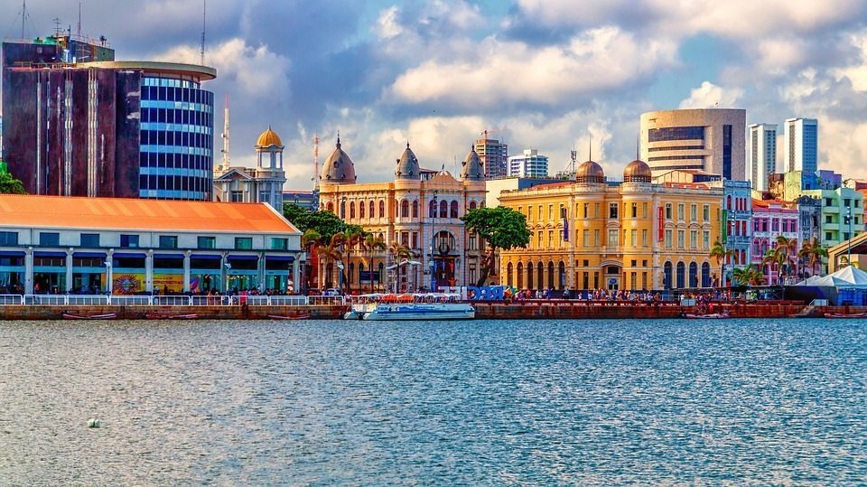

O Recife Antigo é um bairro histórico localizado na região central de Recife, Pernambuco. Ele é conhecido por sua arquitetura colonial, ruelas de paralelepípedos e casarões coloridos.
Este bairro é um destino turístico popular, oferecendo restaurantes, bares, lojas e uma vista incrível do Rio Capibaribe.
Glaeria de Imagens